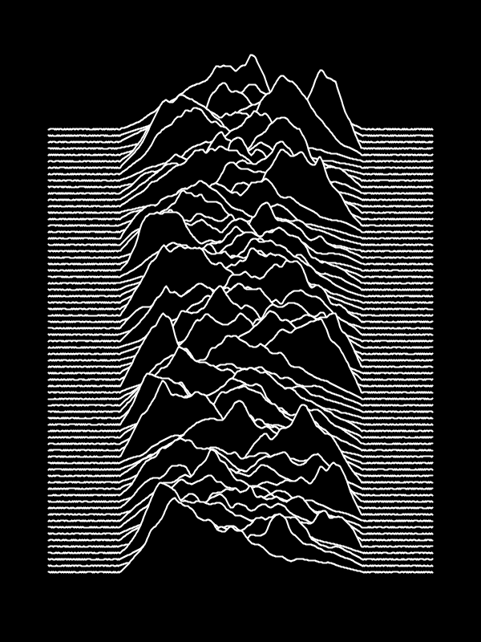

I've been a product manager for over ten years. I do my best to help keep the internet weird. I believe software is a team sport and I love to play.
Currently based in New York.
I've worked for some pretty great companies. You can read more about my journey here.
I've also helped out other startups with user research, brand, strategy and execution.
I write sometimes, mostly about product and tech.
I like to build things. It's mostly bad code, but sometimes design, art, duct tape, nails, glue or Legos are involved.